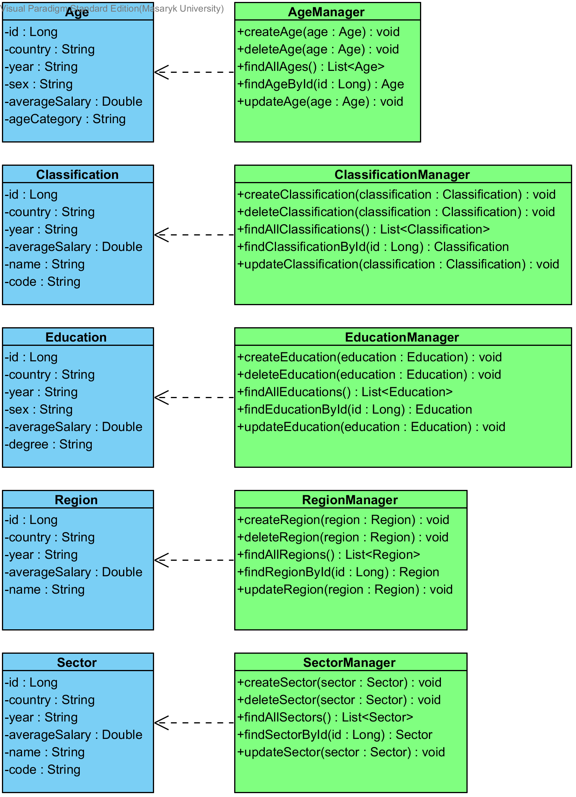
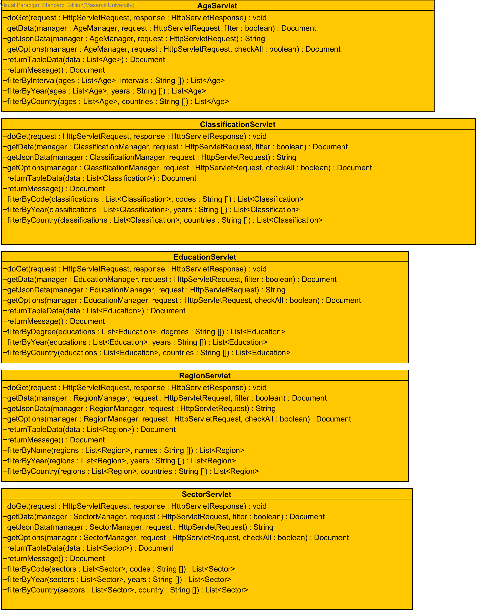

Popis
Cieľom projektu je vytvoriť webový portál, ktorý umožní získať prehľad o štatistických údajoch platov v Českej republike a na Slovensku, s dôrazom na jednoduchosť a užívateľskú prívetivosť.
Štatistiky je možné vzájomne porovnávať a filtrovať na základe rôznych kritérií – pohlavia, veku, vzdelania, odvetvia alebo regiónu.
Dáta sú čerpané z verejne dostupných databáz štatistických úradov.
Návrh aplikácie
Webový portál ponúka porovnanie štatistických údajov platov v období definovanom používateľom, ktoré sú rozdelené do piatich hlavných kategórií – platy podľa vekovej skupiny, dosiahnutého vzdelania, regiónu, prevažujúcej činnosti (SK NACE a CZ-NACE) a hlavných tried klasifikácie zamestnania (SK ISCO a CZ-ISCO). Tieto je možné ďalej filtrovať na základe krajiny a pohlavia.
Používateľ má možnosť takto vzniknuté skupiny porovnávať medzi sebou na základe ich zobrazenia v tabuľke alebo grafom. Je dostupných niekoľko typov grafov pre čo najväčšiu užívateľskú prívetivosť.
Riešenie
Aplikácia je postavená na návrhovom vzore MVC (model-view-controller).
Implementovaná je v programovacom jazyku Java, vo verzii JDK 8.
Na frontende je použitý framework Bootstrap, vizualizáciu dát za pomoci grafov zabezpečuje javascriptová knižnica Highcharts JS.
Dáta sú uložené v relačnej databáze Apache Derby.
UML diagramy
Bližší pohľad na model vrstvu:

Bližší pohľad na controller vrstvu:

Prehľad riešenia:
Vývojári
Václav Štěbra (@VaclavStebra)
Vladimír Jarabica (@angorun)
Tomáš Milota (@TomasMilota)
Filip Bittara (@filipbittara)